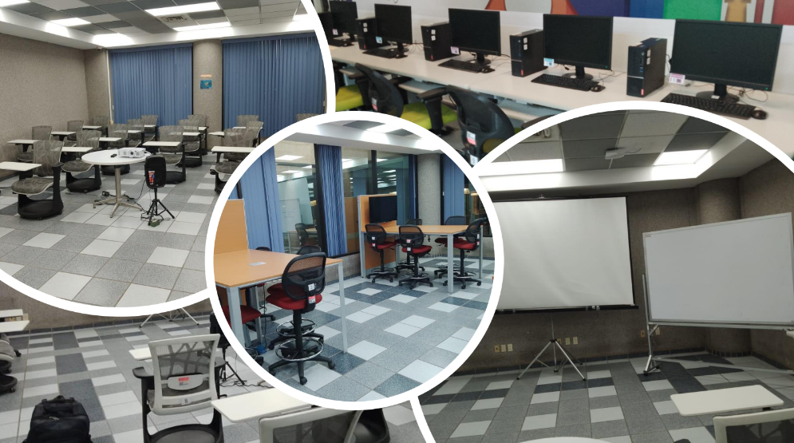

¿Qué es?
El centro de idiomas es un lugar en CUCEI donde se pueden estudiar idiomas por cuenta propia, el cual está situado en la parte de arriba del Centro Integral de Documentación (Biblioteca).

Idiomas
Los idiomas disponibles para estudiar son:
Materiales
Asistencias y horarios
Lunes a viernes - 8:00 a 19:45
Sábado - 8:00 a 13:45
Nota: Se debe asistir un mínimo de 3 horas a la semana.
Requisitos
Preguntas frecuentes
¿Tiene algún costo la inscripción?No, es totalmente gratis para los alumnos del centro universitario, incluyendo los materiales que ofrece la instalación.
¿Qué materiales ofrece el centro de idiomas para los alumnos?
libros en físico y digital, audiolibros, computadoras, y una aplicación para que el alumno vaya aprendiendo el idioma de una manera más eficiente y divertida. La aplicación es 'Rosetta Stone'.
¿Tienen alguna página para que el alumno pueda utilizar los audiolibros y libros digitales fuera de la instalación?
No, este material solamente puede ser utilizado dentro de la instalación.
¿Con cuántas aulas cuenta el centro de idiomas?
Contamos con tres. Dos aulas grandes y una chica. Cuando son pocos alumnos los que van a practicar y estudiar cualquier idioma, se les asigna el aula más pequeña. Para utilizar esta última, es necesario que los alumnos estén registrados y que sean mínimo tres.
También se aplica este mismo requisito si los alumnos desean abrir un club de conversación.
¿Ofrecen clases para que los alumnos puedan estudiar la gramática?
En este momento no, ya que no contamos con profesores.
¿Cualquier alumno puede ofrecer clases de gramática? Y, en ese caso, ¿Se le contará como servicio social?
Sí, cualquier alumno puede impartir clases de gramática, siempre y cuando esté capacitado y demuestre que realmente domina el idioma.
Y no, no le contará como servicio social. En cambio, se le dará un certificado para que pueda agregarlo a su CV.